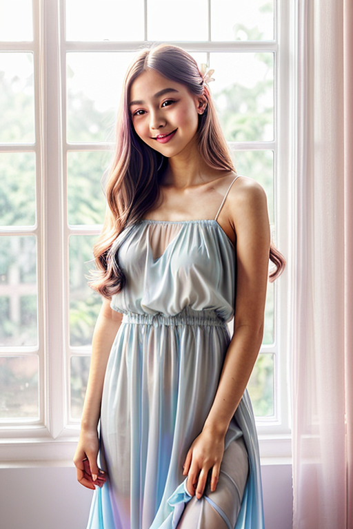
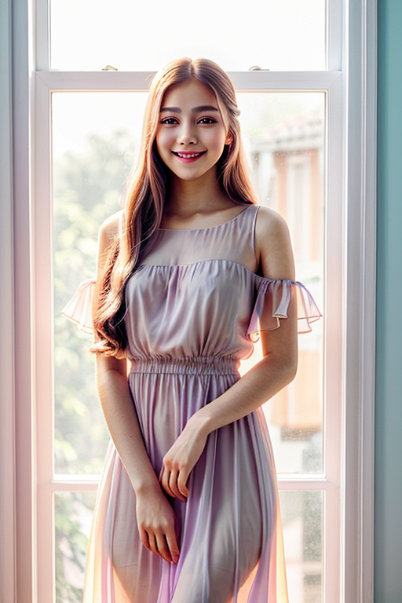
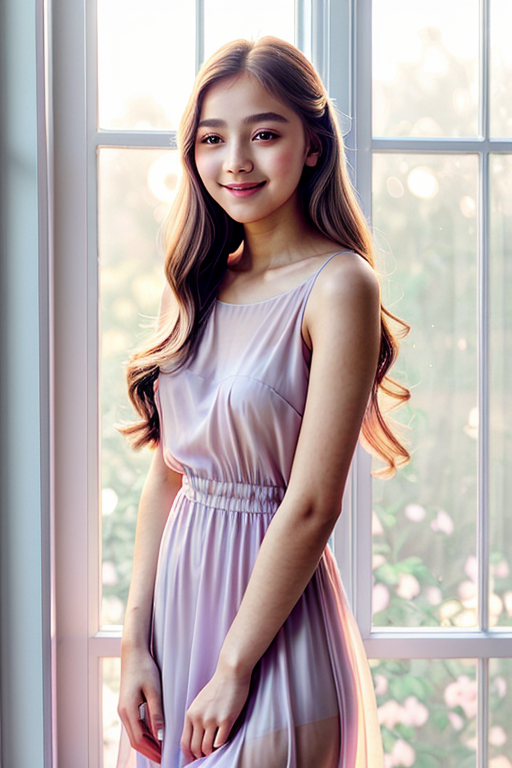
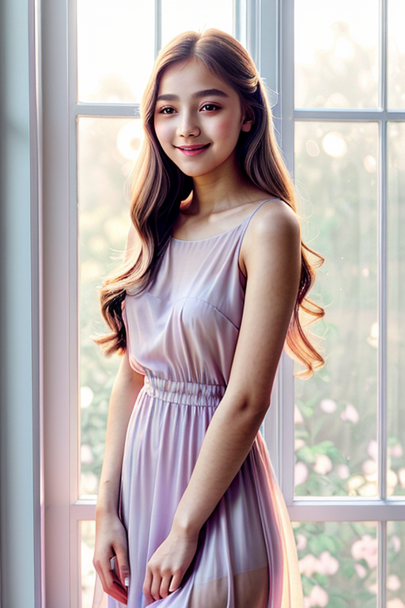
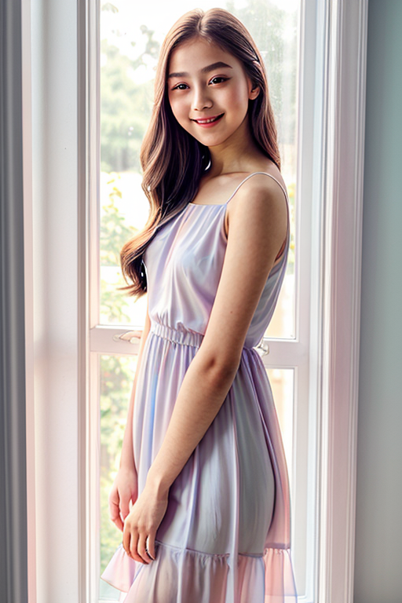
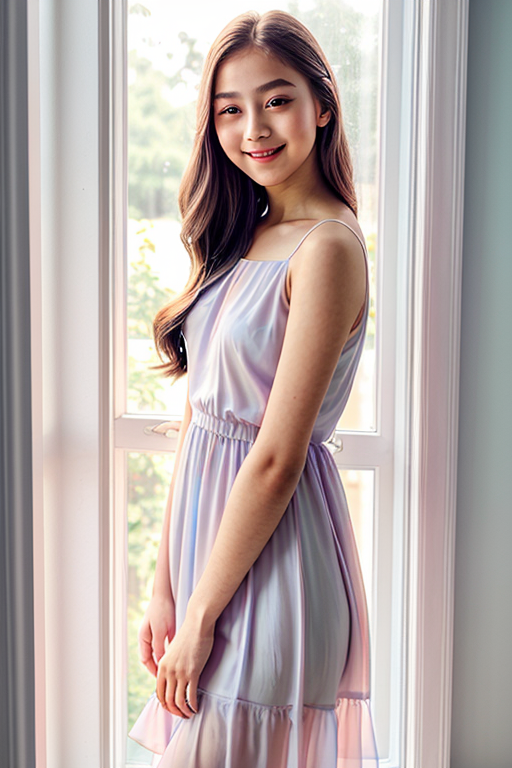
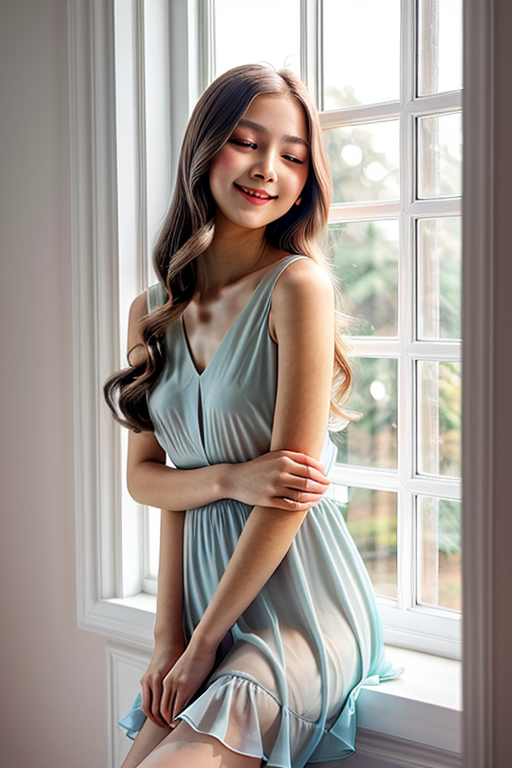
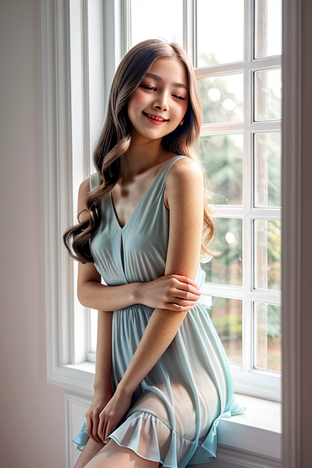

This set explores soft girl window light through cinematic aesthetics and playful tone under soft lighting. Compositions use leading lines with indoor studio, keeping focus clear and tidy. Details like sporty styling and balanced colors make browsing easy.
Browse soft images. Page 4 of curated soft-style portrait collection.
 


 



 


 



Designed for readers looking into page4, this page emphasizes clarity and consistency. Internal navigation leads to related items with comparable tone or composition. This reduces bounce and supports exploration within the same theme. Internal navigation leads to related items with comparable tone or composition. This reduces bounce and supports exploration within the same theme. Alt text and headings are optimized to make the content accessible and to provide consistent cues across the site. Subtle differences in wording help avoid duplication across similar pages. Bookmark the page if it’s useful; updates aim to improve clarity, speed, and overall structure over time. Alt text and headings are optimized to make the content accessible and to provide consistent cues across the site. Subtle differences in wording help avoid duplication across similar pages. Internal navigation leads to related items with comparable tone or composition. This reduces bounce and supports exploration within the same theme. The image aims to deliver a straightforward visual impression while keeping the file lightweight. A brief explanation clarifies the subject and lighting so visitors can quickly decide where to go next. For more context, browse related entries linked nearby; each page offers a slightly different angle to limit overlap.